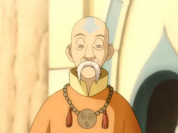
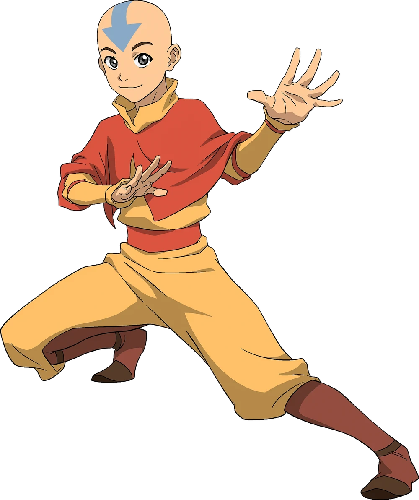

Os Nômades do Ar são um dos quatro povos do mundo de Avatar. Eles viviam principalmente em templos localizados em diferentes regiões do mundo.
Seu elemento representativo é o ar, que pode ser controlado pelos dobradores de ar.
Os Nômades do Ar são um dos quatro povos do mundo de Avatar. Eles viviam principalmente em templos localizados em diferentes regiões do mundo.
Seu elemento representativo é o ar, que pode ser controlado pelos dobradores de ar.

Os Nômades do Ar possuíam uma cultura baseada no espiritualismo, na liberdade e na busca pelo equilíbrio. Muitos deles viajavam entre diferentes regiões.
Os monges também possuíam uma forte ligação com os animais voadores, principalmente os bisões voadores.
Os primeiros dobradores de ar aprenderam observando os movimentos dos bisões voadores, considerados os primeiros mestres da dobra de ar.

Gyatso foi um dos mestres de Aang e um importante membro dos Nômades do Ar. Ele possuía uma relação próxima com Aang e ajudou em sua formação como monge e dobrador de ar.

Aang foi o último Avatar conhecido antes de Korra e o último sobrevivente dos Nômades do Ar após o ataque à sua nação. Ele precisou dominar os quatro elementos para restaurar o equilíbrio do mundo.
A dobra de ar é caracterizada pela velocidade, mobilidade e utilização dos movimentos do próprio corpo. Os dobradores costumam utilizar técnicas que priorizam a esquiva e a movimentação em vez do confronto direto.
Aang era conhecido por utilizar um planador para aproveitar as correntes de ar e se deslocar pelo ambiente.
| Característica | Informação | Elemento |
|---|---|---|
| Nação | Templo do Ar | Ar |
| Dobradores originais | Bisões voadores | Ar |